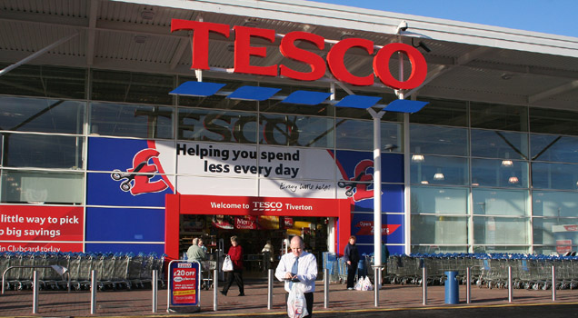

Future Skill Partner
Following my successful tenure as a Checkout Operator, I transitioned into the role of Future Skill Partner at Tesco. This exciting opportunity arose due to my rapid grasp of technology and my ability to effectively teach colleagues how to navigate and utilise the latest technological advancements.
As a Future Skill Partner, my responsibilities encompass nine Tesco stores located in West London. These stores, including Wembley Extra, Brent Cross, Finchley, Hoover, Harrow, Hayes Bulls Bridge Extra, Pinner, Yeading Extra, and Harsleden, have varying headcounts and operate as superstores.
In my role, I collaborate closely with store managers, supervisors, and colleagues across these stores, acting as a liaison for the implementation of new technological changes and initiatives from the head office. With the flexibility to tailor my schedule to meet the specific needs of each store, I initiated my approach by personally visiting each location, introducing myself, and engaging in discussions with store managers. During these interactions, I focused on the implementation of the "Schedule to Workload" project, a key initiative aimed at revolutionising the scheduling process for colleagues.
The "Schedule to Workload" system transforms the traditional manual scheduling process, replacing it with an automated approach based on workload predictions. The operations team generates workload forecasts for every 15-minute interval, covering each department's specific tasks and anticipated demand.
One notable challenge encountered during this role was resistance to change, particularly among older colleagues and managers who preferred adhering to their established methods. Overcoming this hurdle required collaborative efforts, including conducting meetings with managers and store managers to understand their specific concerns and pushback. By highlighting the benefits of the new system, such as reduced time spent on manual rotas and increased capacity for managerial duties like performance reviews, I was able to demonstrate the positive impact and gain buy-in from the stakeholders.
Additionally, I navigated the challenge of working with colleagues who belonged to an ageing population, taking into consideration their unique occupational health needs. This involved making necessary adjustments within each store to ensure fairness and compliance with the Equality Act.
One significant improvement I implemented during my tenure as a Future Skill Partner was enhancing the way data was presented to stakeholders. Previously, weekly reports containing extensive Excel spreadsheets with numerous KPIs and measures were challenging for store managers to digest or often ignored. To address this issue, I utilised Python to extract and consolidate data specific to each store, creating interactive dashboards. Furthermore, I developed a script that automatically generated visually appealing graphs, making the data easily presentable and shareable with others.
As a Future Skill Partner at Tesco, I have embraced the opportunity to drive technological advancements and foster a culture of continuous learning and development. Working collaboratively with store managers and colleagues, I have navigated challenges, implemented innovative solutions, and contributed to the success of the "Schedule to Workload" project while ensuring the fair and efficient operation of each store.